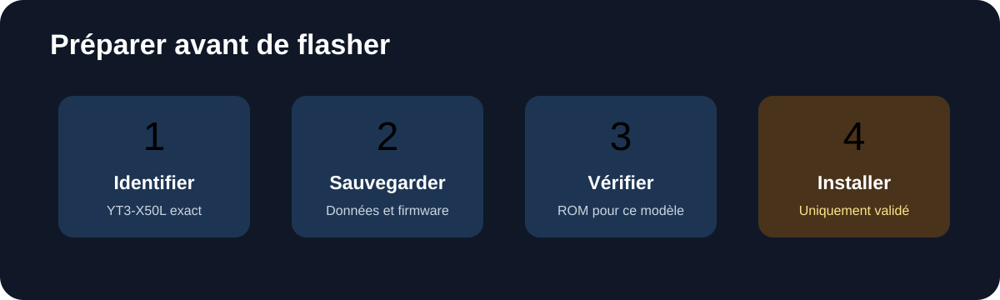

🔎 Identifier la tablette
Confirmer le modèle exact YT3-X50L, la variante LTE et la version logicielle.
Le guide de préparation, de vérification et d'installation pour la variante LTE de la Yoga Tab 3 10 pouces.
À ce jour, aucune ROM Android 10 installable et vérifiée pour le YT3-X50L exact n'est référencée dans ce guide. Ne flashez pas une ROM d'un modèle voisin : cela peut rendre la tablette inutilisable.
Suivez cet ordre. L'installation est bloquée tant que la compatibilité de la ROM n'est pas démontrée.
Confirmer le modèle exact YT3-X50L, la variante LTE et la version logicielle.
Copier les données personnelles et conserver le firmware d'origine approprié.
Installer ADB/Fastboot et récupérer uniquement les fichiers destinés à ce modèle.
Confirmer la compatibilité YT3-X50L, le recovery et la méthode d'installation.
Étape non publiée : aucune procédure de flashage fiable n'est validée pour le moment.
Contrôler LTE, Wi-Fi, Bluetooth, son, caméras, GPS, charge et veille.
Sur la tablette, ouvrir Paramètres → À propos de la tablette et noter :
YT3-X50L.Ne poursuivez pas si le numéro de modèle diffère. Les variantes YT3-X50F, YT3-X50M et YT3-X50L ne doivent pas être considérées comme interchangeables.
Copier les photos, documents et autres fichiers vers un ordinateur ou un stockage externe. Vérifier que les fichiers sauvegardés sont lisibles. Conserver également une copie du firmware d'origine correspondant exactement au modèle et à la région.
Le déverrouillage du bootloader et certaines opérations de flashage peuvent effacer toutes les données. Une sauvegarde vérifiée est indispensable.
Aucun fichier ROM Android 10, recovery ou paquet GApps n'est proposé ici : la disponibilité d'une version fonctionnelle conçue spécifiquement pour le YT3-X50L n'est pas confirmée.
Tant que ces points ne sont pas validés, ne déverrouillez pas le bootloader et ne flashez aucun fichier.
Cette section sera complétée dès qu'une ROM et une méthode d'installation propres au YT3-X50L auront été identifiées et vérifiées. Les commandes génériques trouvées pour d'autres appareils ne constituent pas une procédure sûre pour cette tablette.
Une fois une installation validée disponible, tester le démarrage, l'écran tactile, le Wi-Fi, le réseau LTE et la SIM, le Bluetooth, le son, les caméras, le GPS, les capteurs, la charge et la veille.

Illustrations informatives. Elles ne sont pas des liens et ne s'ouvrent pas au clic.
La préparation et les ressources officielles sont documentées. Le flashage Android 10 reste volontairement suspendu jusqu'à confirmation d'une ROM compatible avec le modèle exact.
Consulter les fichiers du projet ↗